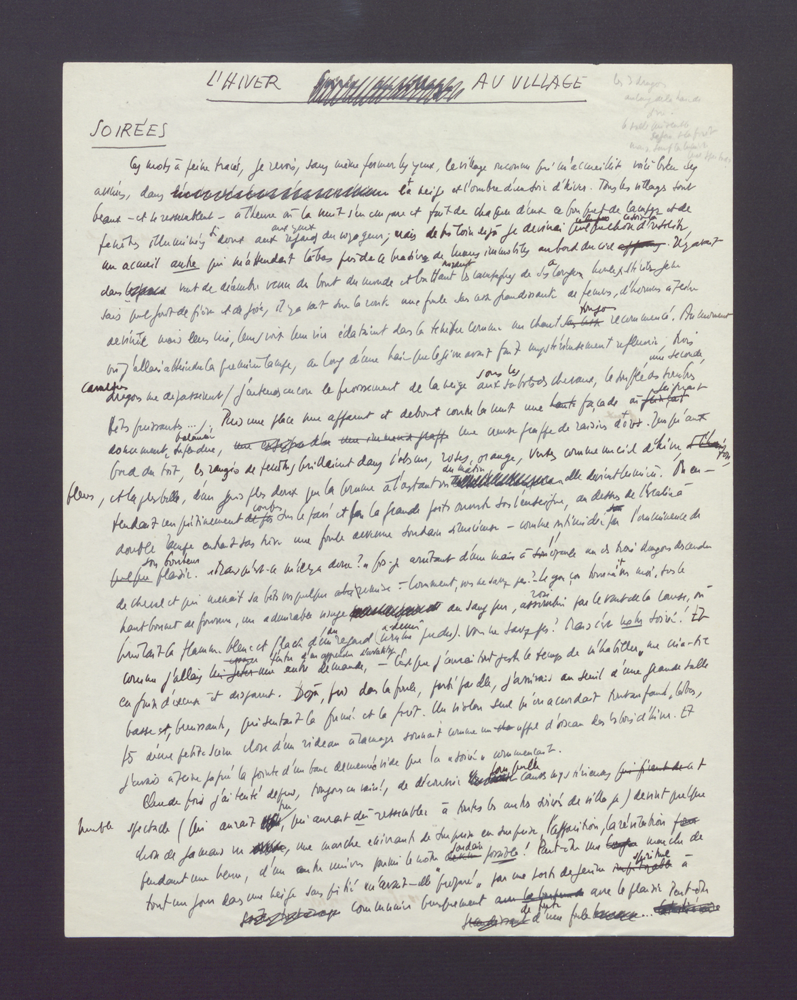
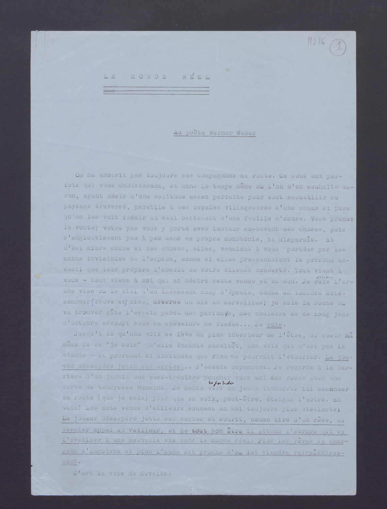
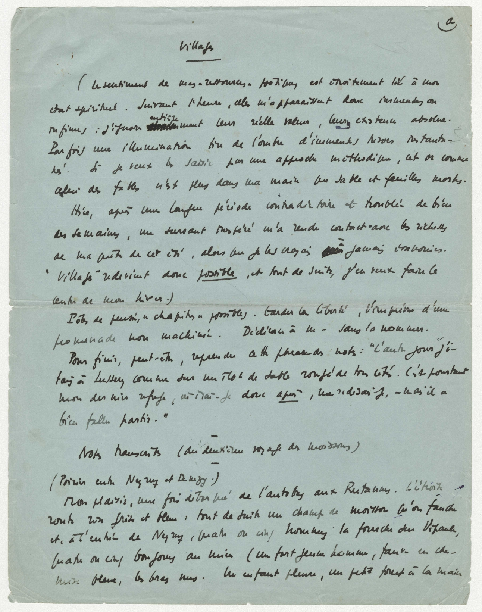

Comment représenter et éditer une genèse ?
Cours Génétique des textes littéraires de Rudolf Mahrer (UNIL), 24.05.2019
Alessio Christen et Elena Spadini (CLSR de l'UNIL)
Présentation en ligne
Alessio Christen et Elena Spadini (CLSR de l'UNIL)
Présentation en ligne
Table de matières
- Éditions génétiques
- Gustave Roud, pratiques d'écriture
- Vers une modélisation des relations génétiques
1. Éditions génétiques
édition
médiation
critique
Types d'édition génétique
- éditions horizontales : étudier une phase précise de la genèse (synchronie)
- éditions verticales : traverser l'épaisseur du dossier de genèse (diachronie)
Pierre-Marc de Biasi, Génétique des textes, CNRS 2011
Edizione di filologia d'autore
- testo di una redazione (prima, ultima, intermedia)
- apparato (genetico, evolutivo; verticale, orizzontale)
- postille
- varianti
Paola Italia & Giulia Raboni, Che cosa è la filologia d’autore, Carocci 2010
éditions papier
outils numériques
- XML-TEI
- collation automatique
- etc.

outils de collation automatique
Parmi les plus utilisés ...
- Juxta Commons
- CollateX (Java | Python)
Éditions numériques (pas numérisées)
Catalogues
- Catalog of Digital Scholarly Editions, compiled by Patrick Sahle
- Catalogue Digital Editions, by Greta Franzini
Éditions numériques
Exemples
Éditions numériques
Attention!
Éditions hybrides
Exemples
2. Gustave Roud,
pratiques d'écriture

Gustave Roud, 1897-1976
Trois manières de composer un texte
- A. Genèse « classique » : texte et avant-texte
- B. Genèse à partir du Journal : des notes a posteriori génétiques
- C. Genèse à partir textes déjà publiés : reprise et poursuite, des genèses post-éditoriales

Liste « Thèmes p. l’article de la Guilde »
« D’une certaine pureté », Bulletin mensuel de la Guilde du livre, no 1, janvier 1940, pp. 2-4
« Deux fragments d’un hommage à C. F. Ramuz », Suisse romande, no 2, 1er juin 1938, pp. 80-82
« Deux fragments d’un hommage à C. F. Ramuz », Suisse romande, no 2, 1er juin 1938, pp. 80-82
Brouillon, « L’Hiver au village »
Mise au net, « Le Monde réel »
Brouillon, « Villages »
Transcription linéaire du début
de « Villages », sans les biffures
« (Le sentiment de mes « ressources » poétiques est étroitement lié à mon état spirituel. Suivant l’heure, elles m’apparaissent donc immenses ou infimes ; j’ignore entièrement leur réelle valeur, leur existence absolue.
Parfois une illumination tire de l’ombre d’immenses trésors instantanés. Si je veux les saisir par une approche méthodique, cet or comme celui des fables n’est plus dans ma main que sable et feuilles mortes.
Hier, après une longue période contradictoire et troublée de bien des semaines, un sursaut inespéré m’a rendu contact avec les richesses de ma quête de cet été, alors que je les croyais à jamais évanouies. « Villages » redevient donc possible, et tout de suite, j’en veux faire le centre de mon hiver.)
Pôle de pensée, « chapitres » possibles. Garder la liberté, l’imprévu d’une promenade non machinée. Dédicace à m – sans la nommer.
Pour finir, peut-être, reprendre cette phrase des notes : […] »
Parfois une illumination tire de l’ombre d’immenses trésors instantanés. Si je veux les saisir par une approche méthodique, cet or comme celui des fables n’est plus dans ma main que sable et feuilles mortes.
Hier, après une longue période contradictoire et troublée de bien des semaines, un sursaut inespéré m’a rendu contact avec les richesses de ma quête de cet été, alors que je les croyais à jamais évanouies. « Villages » redevient donc possible, et tout de suite, j’en veux faire le centre de mon hiver.)
Pôle de pensée, « chapitres » possibles. Garder la liberté, l’imprévu d’une promenade non machinée. Dédicace à m – sans la nommer.
Pour finir, peut-être, reprendre cette phrase des notes : […] »
3. Vers une modélisation
des relations génétiques
Modélisation
Formalisation explicite et coherente
de notre comprehension et interpretation des données.
de notre comprehension et interpretation des données.
Les manuscrits de Madame Bovary. Tableaux génétique des brouillons

Hermann Burger, Lokalbericht. Digitale Edition. Das genetische Dossier
“ Ce qui est sans doute à retenir de cette experience [avec le logiciel Storyspace] [...] c'est la nécessité de nommer les liens et de prévoir des carrefours de liens „
Daniel Ferrer, « La représentation hypertextuelle des manuscrits. Quelques leçons de douze années d'expériences », L'Edition du manuscrit. De l'archive de création au scriptorium numérique, éd. A. Crasson, 2008
Ontologie
(web semantique)
Triplet RDF
sujet -----prédicat---> objet
classe -----propriété---> classe / literal
Classes
| ▭ | Document |
| ○ | Dossier génétique |
| ◇ | Publication |
Propriétés
roud-œuvres:isPartOfGeneticDossier
| ▭ Document |
→ | ○ Genetic Dossier |
roud-œuvres:isBeforeInAvantTexte
| ▭ Document |
→ | ▭ Document |
roud-œuvres:GeneticDossierResultsIn
| ○ Genetic Dossier |
→ | ◇ Publication |
roud-œuvres:diaryRewrittenInDiary
| ▭ Document (feuilles,petit carnets, etc.) |
→ | ▭ Document (cahiers, etc.) |
roud-œuvres:diaryReusedIn
| ▭ Document |
→ | ○ Genetic Dossier |
roud-œuvres:publicationReusedIn
| ◇ Publication |
→ | ○ Genetic Dossier |
Alessio Christen et Elena Spadini, Comment représenter et éditer une genèse ?, Cours Génétique des textes littéraires de Rudolf Mahrer (UNIL), 24.05.2019, Université de Lausanne.